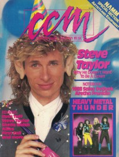

CMnexus
: Contemporary Christian culture, music, and media.
|
CCMJan 1988, vol. 10, iss. 7
| Cover |
|---|
|  | | Writers in this Issue |
|---|
Anderson, Warren
Brown, Bruce A.
Dale, Christopher
Donaldson, Devlin
Eischer, Mark
Fischer, John
Frazer, Robyn
Hart, David S.
Keaggy, Eddie
Newcomb, Brian Quincy
Willman, Chris
|
Cover Feature:
- "Rock'n Role Model" by Chris Willman
Article:
- "Heavy Metal / Magazines" by David S. Hart
- "Heavy Metal Thunder" by David S. Hart
- "Finding The Fanzines"
Christian Musician:
- "Sound of a Broken Heart" by Eddie Keaggy
Toys in the Band:Notebook:
- "Ridin' On A Labor of Love" by Robyn Frazer
- "Musical Musician"
- "Soviet Rocker Preaches In Leningrad"
- "I Predict: 1988: Christian Record labels Hoping For A Good Year"
- "Russ Hollingsworth's Singing Summer School"
Celebrating Our 10th Year:What's New:In Concert:
- "Good Time At A Bad Time" by Mark Eischer
John Fischer:
- "Where's The Graffiti?" by John Fischer
|
|